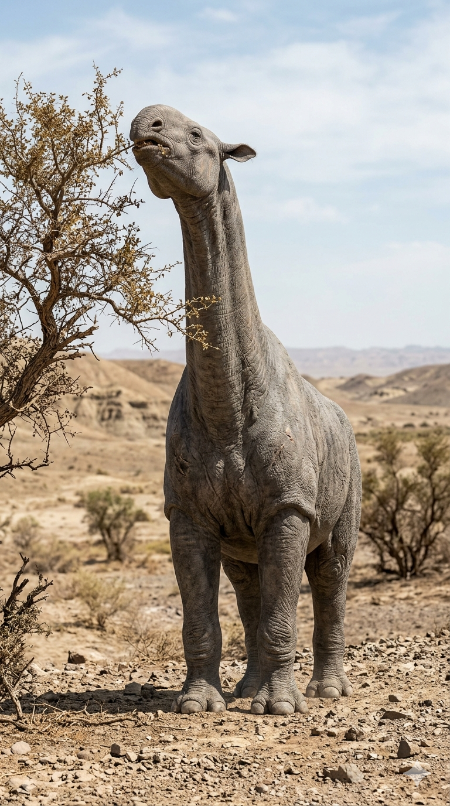
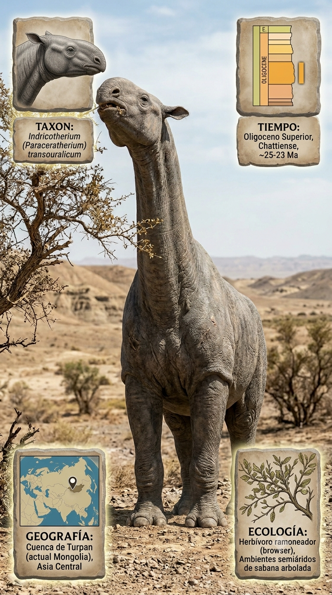
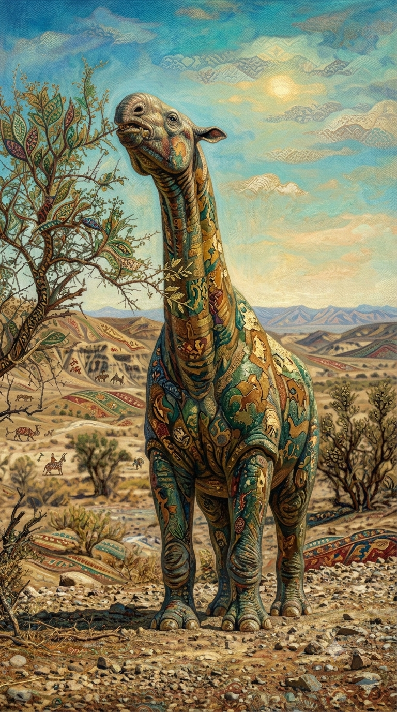

Paleoficha de Indricotherium



Periodo: Oligoceno temprano a medio
Edad: Hace aproximadamente 30 millones de años.
Dieta: Herbívoro ramoneador.
Distribución: Formación Hsanda Gol, Mongolia (Asia Central).
TAXÓN:
Indricotherium (Paraceratherium)
CLADO: Familia Indricotheriinae (Rhinocerotoidea)
DIETA: Herbívoro ramoneador (consumo de follaje de altura)
TAMAÑO: Aproximadamente 4,8 metros a la cruz; peso estimado entre 15 y 20 toneladas
LOCOMOCIÓN: Cuadrúpedo de columna vertebral arqueada para soportar un peso masivo.
TIEMPO:
Oligoceno temprano a medio, aproximadamente 30 millones de años.
GEOGRAFÍA:
Formación Hsanda Gol, Mongolia (Asia Central). Planicies interiores de Asia. Ambiente paleoecológico de paisajes abiertos y semiáridos con vegetación leñosa dispersa.
ECOLOGÍA:
Bosques de árboles de hoja perenne y arbustos altos adaptados al ramoneo. Fauna asociada con Entelodon, Hyaenodon, roedores e insectívoros. Nicho de megaherbívoro de altura, prácticamente fuera del alcance de la mayoría de depredadores. Actuaba como regulador de la biomasa arbórea con escasa competencia de otros herbívoros.
CLIMA:
Wm2 (Semiárido). Estacionalidad marcada con inviernos frescos y veranos secos.
ESTADO ECOLÓGICO:
Estable. Representa uno de los mamíferos terrestres más grandes conocidos, especializado en el ramoneo de altura.
Vídeo PalEntropía:
▶ Ver Short en YouTube